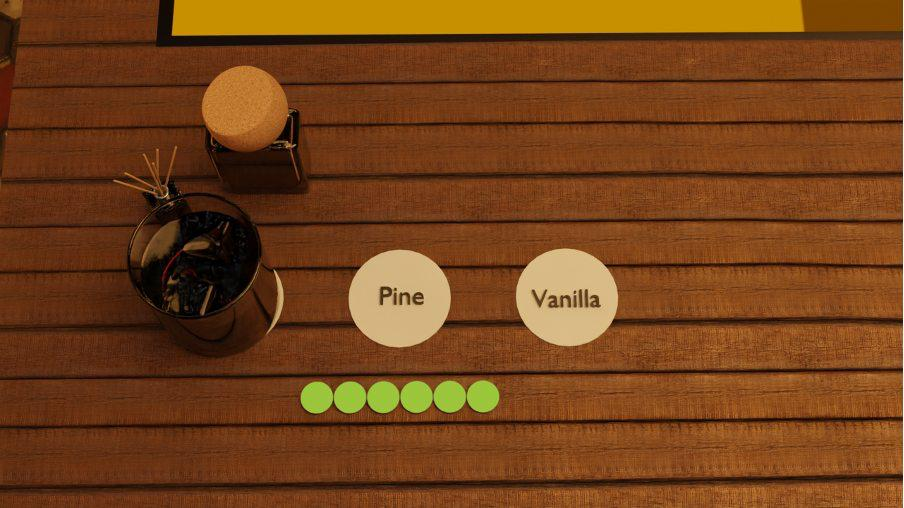
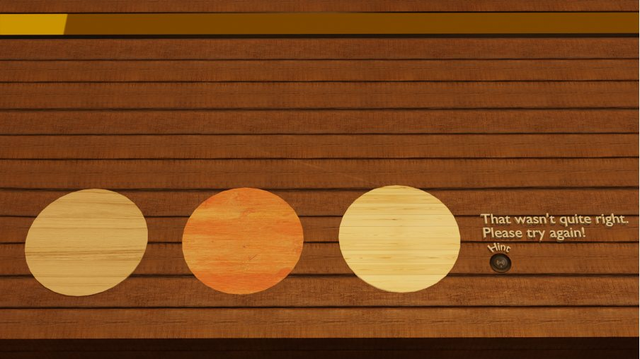
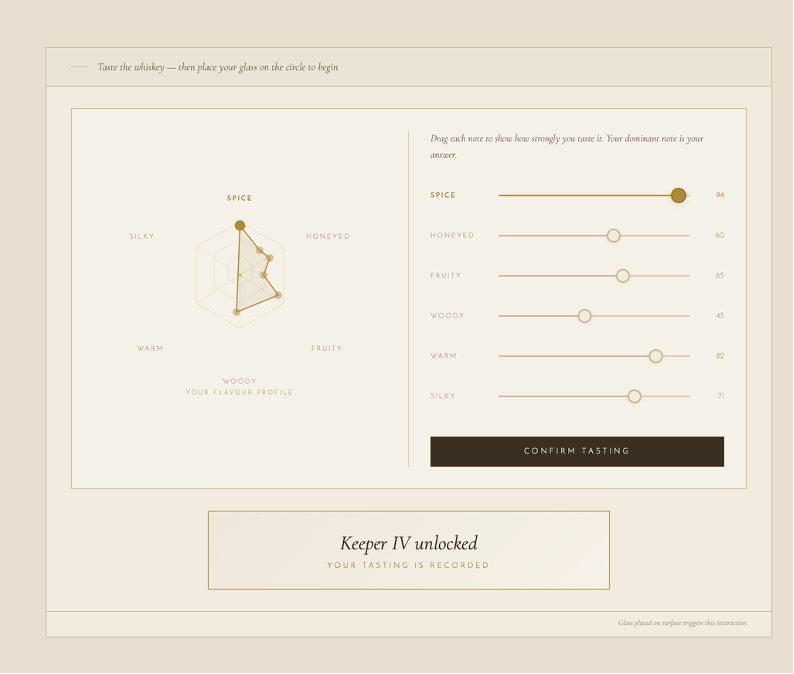
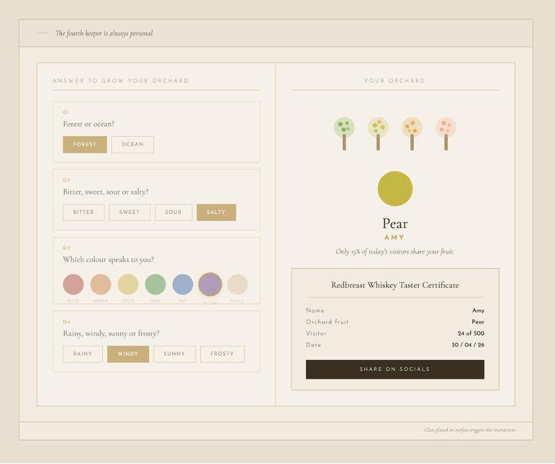

Marketing Campaign for Redbreast Whiskey
The Master's Atelier is an immersive brand installation designed for the launch of Redbreast Mizunara Edition whiskey.
Visitors move through a physical bar environment, completing four sensory challenges identifying a scent, matching wood types, mapping a flavour profile, and answering a personal questionnaire each one unlocking the next stage of the experience and culminating in a personalised Whiskey Taster Certificate and an engraved keepsake vessel.
The interactive bar surface was prototyped as self-contained HTML/CSS/JavaScript files featuring a real-time radar diagram with free-drag input, NFC-triggered feedback states, and dynamically generated results pulled from Redbreast's official tasting notes. The full installation was visualised in Blender, including animated LED feedback strips, keyframed error and success states for each challenge, and a complete atmospheric bar scene built for presentation and client review.
The project ran through the full design pipeline: concept development, audience personas, iterative Figma wireframing, user testing, and accessibility review, before reaching final interactive prototypes and a rendered Blender animation.
Keeper I - Sandlewood (Scent Identification)
Keeper I requires the following hardware and physical props: A fragrance spray bottle to accommodate visitors at the station, scented to match sandalwood. Paper scent strips available at each seat Three NFC readers embedded into the bar surface beneath each of the three labelled scent circles (Sandalwood, Pine, Vanilla) Smart LED strip or LED panel beneath the bar surface to produce the progressive illumination effect.

Keeper II - Mizunara Oak (Wood Matching)
Keeper II requires the following physical props: Three wooden coasters per visitor station, made from Aspen, Beech, and Mizunara Oak. Each coaster must have a meaningfully different grain texture, weight, and colour so visitors can distinguish them. Each coaster must have a unique NFC tag embedded underneath.

Keeper III - Spice (Taste & Clock Interaction)
An NFC reader is required at the clock zone on the bar surface to detect when the visitor places their vessel down and trigger the interaction. The bar surface must support smooth, real-time finger-drag tracking to register the clock-hand drag gesture accurately. A hexagonal radar diagram is required to display the whiskey's taste profile.

Keeper IV - Orchard Fruit (Personalised Quiz & Reveal)
The bar surface must support tap inputs for selecting buttons for the four quiz questions. A visual of an orchard tree is required on the panel of the surface, capable of animating from bare to fully blossomed in real time as questions are answered. Calculations are needed to determine the visitor's orchard fruit result (Apple, Pear, Plum, etc.) from the combination of answers given. The reveal screen must dynamically populate with the visitor's name and a generated statistic. A laser engraver is required at the bartender station to personalise the visitor's vessel during this stage.

End of Experience - Keepsakes & Visitor Output
The engraved vessel (cask mug or whiskey glass) is returned to the visitor after Keeper IV is complete. A digital Redbreast Whiskey Taster Certificate, with the visitor's name, orchard fruit result, visitor number, and date, with a shareable link of the certificate via a QR code/link, so visitors can share the experience.
Tools: Blender · Figma · HTML · CSS · JavaScript